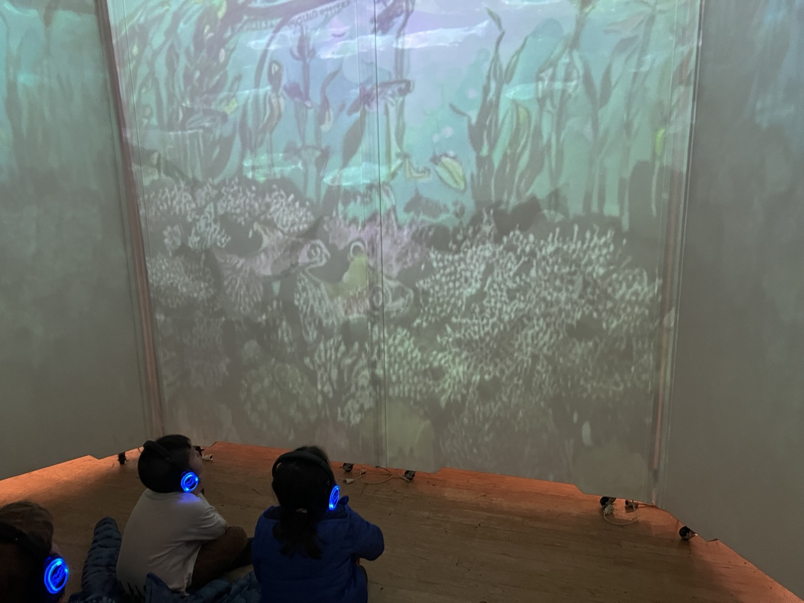
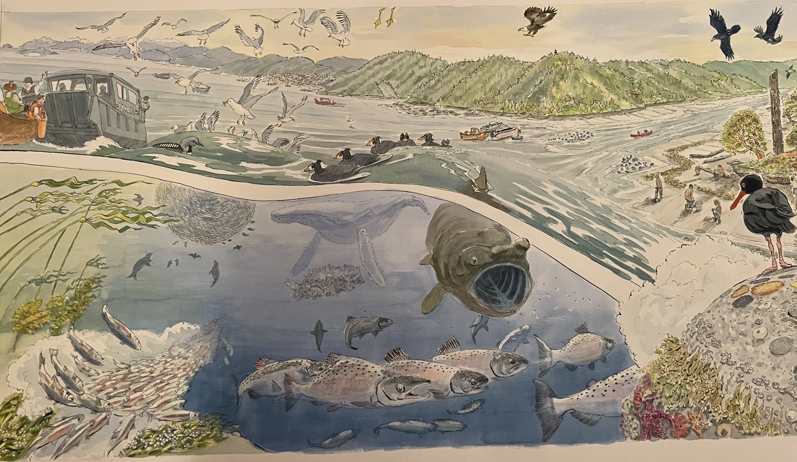
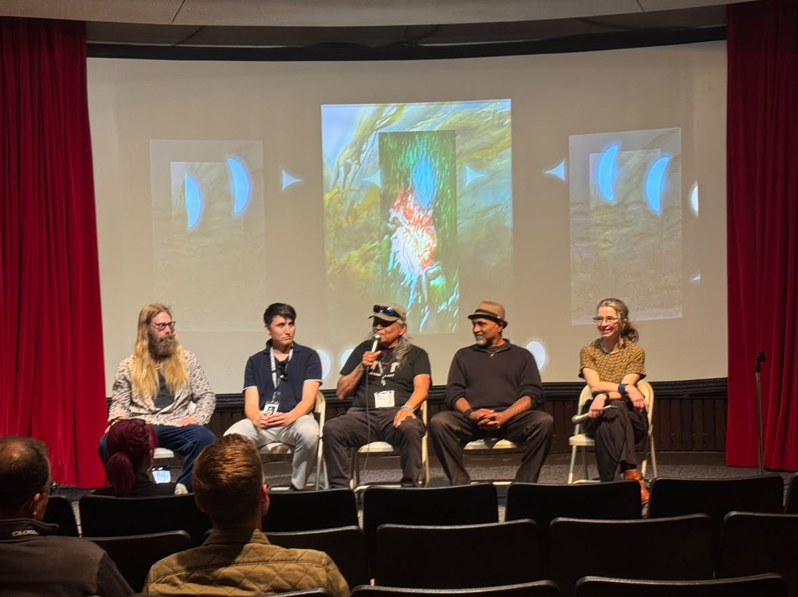
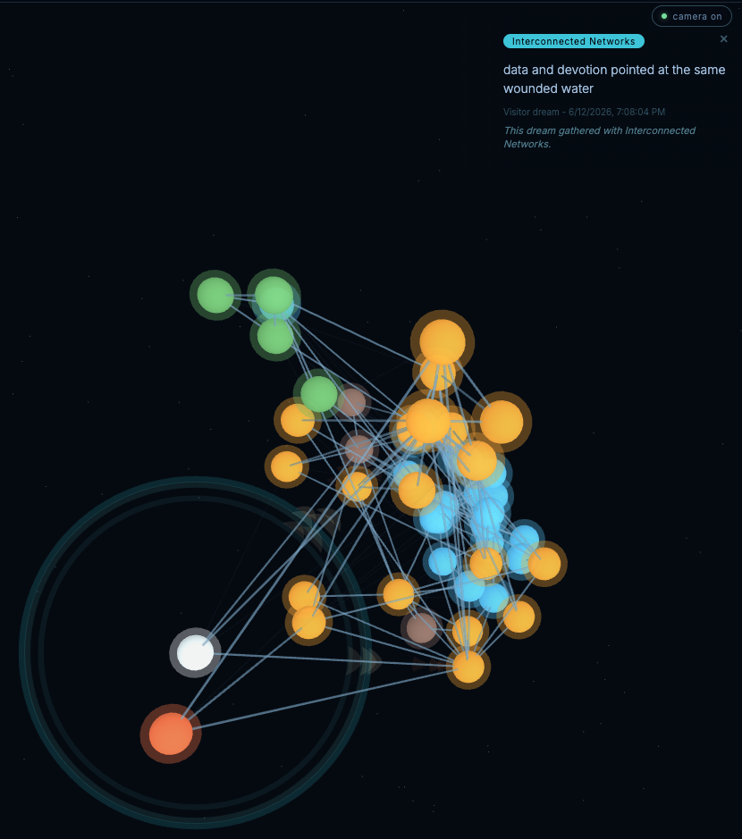

Climate Futures · Immersive Media
SALISH SEA
DREAMING
We are the Salish Sea, dreaming itself awake.
An immersive climate installation, and a process of listening to a living sea.
We are the Salish Sea, dreaming itself awake.
An immersive climate installation, and a process of listening to a living sea.
Species-specific AI models and real-time diffusion, driven by live ecological data. The sea is never the same twice.
The work holds aspiration and ecological grief together, and invites visitors to add their own dream to a living archive.
Shown publicly twice this year and built to travel: re-deployed to a new venue in under four weeks.
A visitor steps into a darkened, ceremonial space, closer to a meditation room than a screen. Marine life moves across a large projection in a living watercolor language, grounded in live ecological data: tide, lunar phase, and river discharge.
The work rewards witnessing rather than input: a visitor becomes a witness to the sea, not a consumer of it, a counter to the attention economy. Where the venue allows, visitors co-dream, offering a few words for the sea that join a live, semantically clustered, consent-governed archive of everyone's dreams.

The story is the Salish Sea, told through its keystone: the Pacific herring. Forage fish are the base of a climate-regulating food web, the cascade that feeds salmon, that feeds orca, that feeds the forest through carcass nutrients, that sequesters carbon.
Herring are worth more swimming than landed. Markets cannot see that value; a quota system sees only the fish in the net.
Composer Matt Robertson translated seventy-five years of herring catch and spawn-collapse records into an evolving musical score: the history of the herring, rendered as sound.
The silence at the end is not the end. It is where the dreaming begins.

Re-deployed to a new venue in under four weeks. That is what makes a multi-stop community tour low-risk.


Distribution runs through Regenerate Cascadia and the Department of Bioregion, our US 501(c)(3) fiscal partner, and its Landscape Hub Cultivator network of watershed groups across Cascadia.
With the Indigenomics Institute (curatorial framing and sovereign compute), the HR MacMillan Space Centre, and MOVE37XR anchoring production.
The 2023 Bioregional Activation Tour reached 14 communities in 30 days, organized with 80+ people on both sides of the border, reaching 1,000+ people on under $80,000. Many of those organizers now run the landscape groups that will host this tour.
With contributions from Moonfish Media (underwater cinematography), David Denning (bioregional photography), and SFU's MetaCreation Lab (generative-model guidance).
To bring Salish Sea Dreaming to Cascadia's communities: a method for each place to dream its own waters awake, and a door from feeling toward the restoration work already underway there.